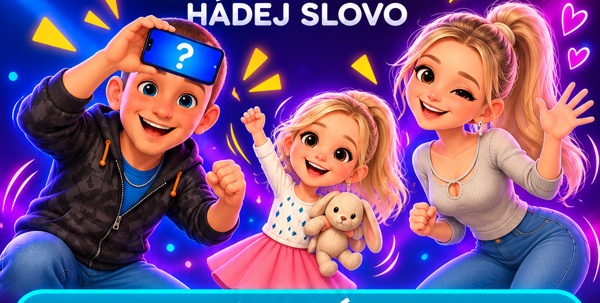

✦ PARTY HRA • PANTOMIMA ✦
Předveď to.
Rozesměj všechny.
Vezmi telefon, zapoj partu a ukaž, co v tobě je. Slova se hádají, smích je zaručen.

✦✧⚡🤔 Co to je?ACT IT OUT!◷Závod s časemRychlá kola plná energie
✦Vaše pravidlaTýmy, kategorie i vlastní slova